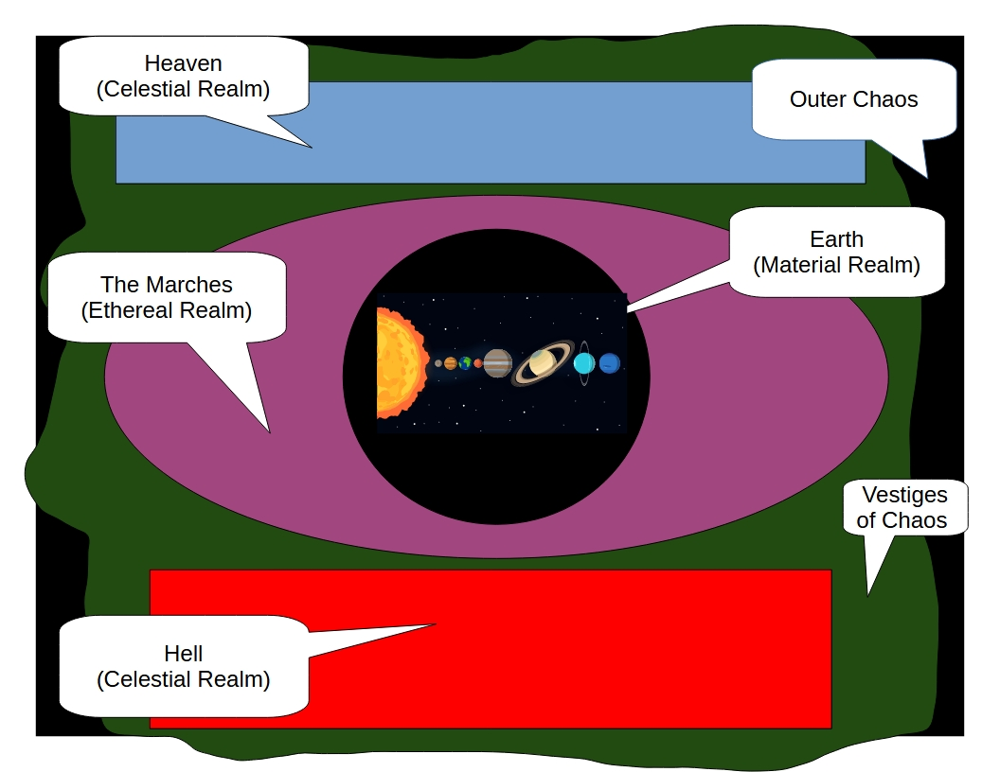

The Path of the Right Hand
In the past, a group discovered that the world was not as it seemed. This group was composed of members of other secret societies such as the Freemasons and Golden Dawn. The conspiracies and powers discussed and pursued in the mundane groups were just that, mundane.
What was uncovered was very important and very dangerous. Many of the enemies of man, or the universe for that matter, are aware. Some have human or greater than human intelligence and do not want to be tracked or thwarted. Some are clumsy creatures of great power and others are fragile but evil intelligences from beyond.
Calling themselves "The Followers of the Right Hand", they began amassing all the information they could about the threats to mankind. They were careful; very careful because the creatures could not only kill the observer(s) but it may turn against the whole of the world. As it was, the group lost members almost every week. The FRH, as they became known, realized they needed to recruit more careful people and disperse their knowledge over the world to prevent the crucial information from being destroyed at one location.
By the time of the early 19th century, FRH had safe houses / archives all over the world in every major city. By the end of the Victorian era, the largest one outside of Geneva, Switzerland was located in Cloudburg. While investigators were still dying or disappearing frequently, the FRH had confidence as its resources had grown dramatically. Powerful and wealthy men were invited into the group and the group's investigation arm had discovered a lot of lost gold adding to the resources of the group.
This all changed on June 30th, 1908 (the date of the Tunguska Explosion). Something or someone infiltrated and destroyed all of the FRH branches and killed all their members. Only Cloudburg was spared as it was not in a major city at the time and no members were currently assigned to the chapter house. It must be speculated that the killer(s) and vandal(s) did not understand the books and other artifacts in the FRH chapter houses since most survived. People were killed and architecture was severely damaged in each chapter house outside of Cloudburg. Damage to some buildings did destroy all artifacts and books as some chapter houses were in vulnerable areas such as Venice or New Orleans and water flooded the houses.
All the chapter houses are hidden and only minor clues in the Cloudburg house can lead future investigators to the other houses.
In 1921, Edgar Von Haupt purchased a house on Fila de Horca Blvd in Cloudburg. Edgar is a very sensitive medium and found the house conducive to seances. One night, January 24th to be exact (the night of the total solar eclipse in NYC), Edgar awoke from a vivid dream of helpful knights sitting at his table with a map and a list of names written out in Edgar's own handwriting. The map turned out to be a map of his new basement but it showed more levels below the current basement.
Over the next month, Edgar smashed open new doorways to the old levels and immediately realized he had found something of major historical significance. During the renovation and his medium work, Edgar investigated the list of names he had written. He soon had a psychic feeling that these people needed to help him understand the newly discovered rooms.
Edgar sent out letters to the list of people. Over the next few months, he heard back from several. Many were not interested or had passed away. Edgar knew enough that this discovery was very, very secret and only the most trusted people could know of its existence. It was with this thought that he approached Dr. David Blunth at the Isla Oro University.
Dr. David Blunth is a professor of history and anthropology that Edgar had met at a few conferences on the occult. Edgar's psychic senses found Blunth both receptive and trustworthy. Originally they met over dinner at the Blunth home. Once Edgar determined he could trust Blunth, he let him know of his discovery. Blunth was frankly skeptical but Edgar had brought along a scroll from the sub basement. Blunth was impressed as the scroll was written in Ancient Thullish, a lost language that only he and a handful of other academics knew. Blunth pressed Edgar on how he knew to bring this scroll. Edgar then demonstrated his medium abilities. Edgar explained that the information was very secret and Blunth could only continue to be involved only if he would take a solemn oath to not betray the find.
Working around Blunth's teaching schedule and Edgar's seances, the two men continued to clear the first level of the sub basement and worked on translating the Thullish scroll. The sub basement surrendered a meeting room with a large central table, multiple small monk-type cells, and many caches of books, scrolls, and artifacts. The artifacts included jars containing items like three-eyed frogs, unremarkable rosaries, pieces of bones in phials, and other odd items.
The scroll proved to be more difficult. After a few frustrating months, Blunth, guided by Edgar's sensitivity, determined the scroll was encoded or encrypted. Once the cipher had been decoded, with the help of Dr. Jacob Rosenthal - a mathematician at the University, Blunth was able to start the translation of the scroll, now called the Founder's Scroll, from the first lines translated. Rosenthal was interested in the scroll but Edgar felt they could not trust him completely and Blunth was convinced. Rosenthal was a resource but he believed they were working on a document from Italy and not one from Cloudburg. He was also unaware the language of the scroll was Thullish. He believed it was a simple replacement cipher on top of the more complex polyalphabetic cipher as the Thullish was written in Greek script.
The Founders Scroll began to shed light on a group that left this complex unattended for at least 40 years. The scroll spoke of the battle against evil and monsters by the Followers of the Path of the Right Hand. At this point the odd FRH initials found throughout the complex and books made sense - Followers of The Right Hand. Edgar and Blunth were ecstatic and began to review the other manuscripts. Most were encrypted with a cipher they hadn't decoded but a handful used the same cipher as the Founders Scroll.
The New Year (1923) had just passed when something changed. Unknown to Edgar and Blunth, their work on translating the Founders Scroll sent out psychic vibrations that drew the attention of one of the FRH old enemies - a demon named Shra-Kabah.
Shra-Kabah is currently bound to the Earth by a powerful spell cast on him by a member of FRH in the year 1550. His physical form is locked into that of a creeping gelatin-type blob roughly 10' in diameter and weighing 800 lbs. He is unable to cast spells or return to Hell. He is physically very strong (ST: 50) and can only be damaged by holy water or magic weapons. The spell that traps him on Earth makes him resistant to magic but not psionic attacks. He has the equivalent of a Mind Shield at 16 and strong will of +5. (Full stats in GCA4.) He is not very bright (IQ:8) but he can track FRH magic due to the spell cast against him.
On October 19th, 1920 Shra-Kabah awoke from a deep slumber having been inactive since helping attack the original Followers in 1905. Von Haupt's purchase of the house caused a minor vibration in the psychic realm enough to awaken Shra-Kabah. When Edgar began exploring the sub basement, Shra-Kabah felt the magic of FRH in a distant land and he started working his way from Central Europe to Cloudburg. He moved by night and hid aboard a ship to travel across the Atlantic. Swimming and crawling (100 miles per day) needing no rest and sloppily eating whatever creature was unfortunate enough to be in his way, Shra-Kabah traveled to Cloudburg. While dumb, Shra-Kabah is wary of humans in general and avoids detection as much as possible, sticking to lakes, rivers, and streams.
It was on the night of January 25th, 1922 when Shra-Kabah attacked Edgar and Blunth at the Fila de Horca FHR house. The demon slid into the sub basement with deep anger but with fear due to the number of magical items around the safe house that could destroy him. It was luck, or destiny, that Blunth and Edgar were examining a sword found in the first level with enough magic to damage Shra-Kabah when the demon attacked. Edgar's psychic powers alerted him to the demon's presence and he swung the magic sword just as the demon slid from a hole in the wall. Blunth's left arm was grabbed by the demon and the arm withered just before the sword struck the demon. Shra-Kabah howled in a cacophony of sounds like a pipe organ dying. He fled the house and vowed to return and kill Edgar.
Nothing medically could be done to help Blunth; his arm remained black and weak. The encounter with the demon sobered Edgar and Blunth. Obviously, the enemies of the FRH were still at large. Knowing they needed real help, the team turned to Edgar's list of names and started searching in earnest while trying to figure out how to keep the demon from coming back.
Why was the Cloudburg Chapter House not in use in 1908?
As with any large, clandestine group a number of internal struggles were taking place. The original concern about the dangers of simple observation versus the need to know more about what is happening lead to two main camps: the Watchman and the Jamesians. The Jamesians took their name from a 13th Century monk named James the Finder who was a FRH member. He was the first to gather samples of ectoplasm in spite of the fear of being seen. James was also one who rescued innocents who got in the line of fire. James disappeared on an investigation in the Black Forest of Germany and the Watchmen point out that his zeal ended his career when he was just 30 years of age. The Jamesians counter that his work in just 10 years added more knowledge to the Followers than most investigators did in 40 years.
This division had been in place for at least a century before the disaster in San Francisco in 1906. Investigators in SF had been aggressively pursuing leads about giant, chthonic worms living in the Earth's crust that may be intelligent. The caution of Rome and Geneva were ignored by SF until the unspeakable happened. The last telegraph from the investigators was an excited message of a new discovery near Santa Rosa just before the big quake hit. The mediums and seers of the FRH felt that the earthquake was caused by a big worm.
The American Chapters became quiet and Jamesianism took a back seat. The only other Chapter Houses out West were LA and Cloudburg and both were closed by December 1906. Per normal FRH rules, the Chapter Houses were hidden using spells and masonry. These are the only two Chapter Houses not damaged by the 1908 event.
Were there other divisions within the FRH beyond Watchmen and Jamesians?
The other main differences within the Followers were the Orientalist, the Kholists (one source), the Naturalists, the Humanists, the No Handers, and Doctrinists.
The Orientalists believe that all the power and creatures descend from the power of China. There are no aliens and Christ is just another magician. Other Orientalists focus on India. Either way, there are no Sidhe, Golems, etc... that are not just Oriental powers in disguise.
The Kholists (after a FRH Watchmen / poet named Khol) believe all the events monitored by the FRH come from one source that is not human-centric. They find evidence for off-planet origins in ancient middle-eastern myths and hints of otherworldly flying ships in Amerindian carvings. They are like Chariots of the Gods and Cthulhu origins.
The Naturalist believes all that is witnessed by the FRH is natural and normal and should not be controlled or prevented.
The Humanists do not care about the origin as much as they care about protecting humanity.
The No Handers are concerned about the idea of a "right" hand and a supposed "left" hand and want the FRH to change the name to Watchers or Watchmen. They are similar to the Naturalists but they think humans should be on top.
The Doctrinists are those who believe that the ultimate truth behind all these odd incidences is explained by an existing human doctrine such as Roman Catholicism. Most Doctrinist were Roman Catholic with a few Jewish members.
How secrets were kept safe.
The FRH has a small 4 wheel encryption tool like the Nazi Enigma machine. The machines were broken but not completely destroyed in all the Chapter Houses except LA and Cloudburg. In those cases, the machine was dismantled into four pieces and hidden around each city. Interestingly, most creatures cannot understand or do not care about human information encryption.
Is there a Left Hand?
The term Right Hand in the name of the organization comes from a dualistic belief that something is either right/good or wrong/evil. Human tradition has ascribed evil doings to the left hand. As far as the FRH knows, there is no "Left Hand". While there have been enemies, particularly former members, of the FRH who call themselves "Followers of the Path of the Left Hand", no evidence exists that it is anything more than a convenient nom de plume. The world is not as simple as there being just two sides.
What are the other major Chapter Houses in the US?
New Orleans was the largest but the 1908 invasion opened the French Quarter Chapter House to water. Surprisingly, the house is in good shape due to solid stone walls and most of the manuscripts and books are in water tight chests.
New York had a house in Manhattan and one in Queens. The Manhattan house is located at Center Park East in a basement and was flooded and more badly damaged than the Queens house. It appears weaker or dumber minions were responsible for the Queens house's destruction.
The Chicago House was also next to the river and flooded in 1908. It is the most damaged of all the US houses.
Santa Fe...
Philadelphia...
Savannah...
Boston...
Providence, RI....
Norfolk, VA...
Miami, FL...
El Paso, TX...
St. Petersburg, FL...
So far, I have started sketching out General Cosmic History. It is something like this:
In the Beginning was Chaos.
Periodically, semi-intelligent forms with some degree of control develop from the seething Chaos.
At what we will call the Start of Time, one particular form emerged that could control and form Chaos itself. This being, Yahweh, became a seed around which other intelligences emerged with power over Chaos but none as great as He Who Came First, Yahweh.
Together, this group carved a stable Land from Mother Chaos and called it Heaven. Among those who greatly aided Yahweh in creating Heaven were Leviathan of Water, Baal of Sky, Hastur of Fire, El of Earth, Morpheus of Dream, and mightiest of The Seconds was Lucifer of Light.
The act of creating Heaven spawned additional minor beings such as Michael, Gabriel, Uriel, Belial, Mephistopheles, Asmodeus, Wotan, Thor, Amon-Ra, and others.
All along the Edges, Chaos bit and chewed at the Firmament of Heaven, but it held as long as Yahweh Dwelled at The Center and maintained his focus. It was Lucifer whose Light illuminated the Edges that helped Yahweh focus.
Yahweh excelled at molding Chaos but not at thinking. It is here the story takes a turn for among the minor creatures was one called Beelzebub. Beelzebub, he was master at nothing more than lying. In his heart, he wanted more power...to shape Chaos like the Great Ones.
He learned by listening to slow Leviathan that the power over Chaos came from Chaos herself and that those formed after Heaven would never bathe in the Glory of Chaos and gain such power.
Beelzebub sought out Yahweh to ask if Beelzebub could venture beyond the Edges into Chaos. Yahweh said no and provided no explanation as was his way. Hurt, Beelzebub went to Lucifer to figure why he would not be allowed into Chaos.
Lucifer found Beelzebub annoying. The Great Light told The Liar that only the destruction of Heaven would allow Beelzebub to experience pure Chaos. As was his manner, Lucifer laughed at The Little Fly. Beelzebub retreated from the Great Light but inwardly he seethed. If Heaven must fall for him to have Chaos, then The Little Fly would do just that.
<I don't know the details in this next part>
Beelzebub goes to the North of Heaven to talk to Baal of the Sky and figures out some way to turn him against Yahweh. Beelzebub gets Michael and his siblings to support Yahweh but in such a way as to get them ready to start a War even if Yahweh doesn't want it. He'd get El to support Yahweh,...
Yadda, yadda, yadda...
The War in Heaven. Lucifer becomes Satan and in the War, the next Age of Creation comes with a Hell below, a Firmament Below, The Earth, The Firmament Above, and the Celestial City of Heaven. At this time, roaming the Earth are all the supernatural creatures that were a byproduct of the War of Heaven/New Creation including ones that will become minor gods like Amon-Ra, Thor, Indra, Yama, The Raven, etc.
In this New Creation that Yahweh makes to end The War in Heaven, He seals it from the Outer Chaos so no other creature can access pure Creation. Everything in this New Creation can only be derived from Yahweh. To keep this loop going, Yahweh's act of Creation spawns something He could not have guessed, a creature capable of channeling the Outer Chaos into The New Creation via a Soul that can Believe: humans.
These humans start Believing in all the minor creatures that can Mold Yahweh's Universe like Odin and Agni. Yahweh needs these humans to Believe in Him so He sends His most powerful followers, veterans of the War in Heaven, to deal with this issue. Michael and his army battles and confines Satan and his followers to Hell. Uriel and his angel army drive the Other gods into the Ethereal Realm of Dreams at the very boundaries of human consciousness/belief. Raphael seals the Unaffiliated Dead in Sheol. Lastly, Gabriel brings the Good News to the humans in the form of the Revelation of the Covenant of Abraham, Israel, Jesus, and Muhammad.
Something, something, human beliefs changing....
Yahweh, now called God, retreats to the Highest Heavens and no one in Heaven, saint, Angel, or Arch-Angel has heard from Him directly in thousands of years. The War between Heaven and Hell still rages on in the limited area of Earth as dictated by God before He departed. Satan was defeated in some obscure coup and now Asmodeus is in charge but Hell is frothing with new demons. Every new human desire provides the seed of belief for a new demon to form. If it can consume other demons of a similar belief-power, it grows and can become even unto a Lord of Hell.
Gabriel is insane. He/She doesn't know if Christianity or Islam is true as He/She was just God's Messenger.
Michael broods in Heaven waiting for the End of the World when he will finally be allowed to Seal Hell.
Uriel is missing. Rumor has it God called him to the Higher Heavens because he pursued the Other gods into near oblivion and that was not part of The Plan.
Rumor is God is plotting with Chaos to unravel the New Creation and start yet again.
A Quick Brain Dump on Planes, Dimensions, Bands, Time streams
In this setting, where we have The New Creation sealed by Yahweh there are three Realms: The Celestial, The Ethereal, and The Material. The original beings formed from Outer Chaos populate the Celestial Realm. God divided the Celestial Realm into Heaven and Hell with the losers from the War in Heaven before The New Creation limited to Hell. Arising from the essence of minds, an Ethereal Realm formed where new creatures arose from the Vestiges of Chaos and the interplay of Dreams. It is here where creatures like old gods and monsters live. Lastly, God made a physical location, the Material Realm home of his central creation, Earth home of Man.

Man is unique in that they are composed of a physical body (Material), a mind (Ethereal), and a soul (Celestial).
Angels and Demons (denizens of Heaven and Hell) are nearly pure Celestial energy or Spirit. Since they are aware, they have a mind and thus an Ethereal component. They have no body. When they visit the Material Realm, they must acquire a physical form. In most cases, an authorized visitor from the Celestial Realm will be given a body by their Superior or they may be a being that can possess a material body.
The Ethereal Realm is referred to by Heaven and Hell as The Marches. It is an ill-defined Realm made up from the stuff of minds; of aware beings. All humans visit the Ethereal Realm when they dream. Celestial beings do not normally dream unless limited by a material body. The main Umbra of the Ethereal lies along the Vale of Dreams from the Tower of Blandine (Archangel of Dreams) to the Tower of Beleth (Demon Princess of Nightmare). The Border Marches are guarded against invaders from the Far Marches - ethereal spirits who claim to be pagan gods, mythical monsters, escaped fragments of dreams, wandering shards of nightmare, dreamers who died in their sleep and chose to keep dreaming... Blandine sets Servitors to protect Dream's side from marauders whereas Beleth's guards just make sure the intruders pay tolls.
The nature of the Material is actually in flux. At first, when Man thought the Earth was the center of the Universe, it was. Then, as Reason rose and Magic diminished, the Earth became a planet around a Sun at the Center of the Universe, and it was. When Man believed the Solar System was just part of a vast Universe, it became so. If, at any point, a human could have physically traveled away from the Earth, they would have found a reality matching what Man believed at that time. Think of it this way, if you had a flying sailing ship in 1790, you could have flown through the Aether to fight Swordsman on Mars but as soon as you leave Earth on a Saturn rocket in 1969, you would enter into the vacuum of space as we know it now and travel to a lifeless moon.
Anything that can be thought of as another plane of existence or an alternate dimension or an adjacent timeline, it is merely a gate to somewhere in The Marches or, if you are really lucky, a Celestial Realm. So, a SteamPunk scientist who creates a machine to open a portal to another dimension will actually open a magic/psionic portal to a location in The Marches. Depending on how it was done, the scientist's personality, and the activity of any angels/demons, it could be a wonderful place in Dream or it could be in Nightmare.
In the Far Marches, there live beings like Cthulhu and other madness inducing Things-Man-Was-Not-Meant-To-Know. They are so weird or odd that they dwell beyond Nightmare. Their connection to Vestiges of Chaos make even Celestials fear them.
The Source and Hierarchy of Powers
Chaos
The Absolute Source of All Power is Chaos - currently, only Yahweh and other pre-War creatures have any power over Chaos and only Yahweh can reach Chaos due to the Limits of The New Creation. Players will probably never deal with this directly. This power level is feared by all Celestials hence the concern about the beings in the Far Reaches like Cthulhu.
Celestial (Songs of The Symphony)
Within The New Creation, the highest source of Power is Celestial. Since Yahweh spoke/sang The New Creation, all Celestial activities are just harmonious (angels) or dissonance (demon) Songs. Celestial Beings (Angels/Demons) have access to Essence and use Essence to manipulate The Symphony via Songs. Unlike Magic (using Mana), performance of Songs doesn't enforce the will of the performer but instead influences The Symphony indirectly. Songs are limited by Realm (Celestial, Ethereal, Material) and can only influence events/beings in the current Realm. The effects of Songs are resisted differently depending on whether they target the characters Body, Mind, or Soul.
Essence
Essence is the energy of life. It's the power that fuels Songs and some attunements, aids in calling Superiors, or allows someone to perform an otherwise impossible feat. It's precious to celestials, since they only get a single measure of it every day. Even mundane humans have Essence (see below), but they use it only unconsciously. Anyone with Power Investiture, however, has Essence Control , allowing them to affect the Symphony in a more profound way - such as to power a Song or an attunement. Such uses of Essence disturb the Symphony, and may be noticed by those with Symphonic Awareness. Anyone with Essence Control may also freely give their own Essence to another being; this doesn't disturb the Symphony.
Celestial artifacts - relics and reliquaries - can store and sometimes generate Essence.
Regaining Essence
Celestials regain Essence in one of three major ways: normal daily recovery, Rites, or Essence transfer.
Daily recovery: Barring unusual circumstances (such as Tether-hopping halfway around the Earth), angels receive one Essence at dawn, demons get one Essence
at sunset, and ethereal spirits replenish their one Essence at midnight. In unusual circumstances, they get their daily Essence roughly every 24 hours - skipping a couple of time zones might increase or decrease that duration slightly. Certain Discords can interfere with normal Essence recovery for celestials.
Rites: Each Rite completed will provide some Essence - usually one.
Essence transfer: Any being with Essence Control can transfer his own Essence to another.
Impudites have a fourth way, by virtue of their resonance. They can leech Essence away from humans (or other celestials, if they're lucky).
Humans and Essence
Humans (and, for that matter, animals) regain one Essence each day at noon. A human can also get one Essence, once per day, by using his greatest gift. In game terms, this requires a success at a skill which is known at a level of 16 or better. Ordinary human beings (those without the Essence Control advantage) have Essence just like everyone else, but they are not conscious of it and can't use it deliberately. When a mundane person really wants to do something, he spends all his Essence, all at once, to help himself. This is the real reason, in The New Creation, for flashes of inspiration, little old ladies lifting cars off of children, and
so on. But mundanes almost always dribble away their Essence as they get it, unknowingly, on trivial things. Thus, there is no game effect . . . unless the
GM wants to use this, very occasionally, to explain how one of his NPCs could do something the players didn't expect.
The average human without the Essence Control advantage can have a maximum of 2/3 of HT (round down) Essence. However, because mundanes unknowingly waste their Essence on little things, the randomly encountered mortal on the street will have only 1d-4 Essence. This is normally important only to Impudites interested in stealing it.
Those with sensitivity to The Symphony can sense other power usages like Magic or Psi. The reverse is not true, no Magic or Psi can resist or overcome a Celestial based power. Celestial beings are sensitive to changes in The Symphony (they experience it "playing" all around them) and thus Demons and Angels can tell when Songs are performed near them. Any action of a Celestial will disturb The Symphony and Celestials will perceive these disturbances as Notes. The more Notes, the "louder" the disturbance. Examples of such actions include: +1 per Essense used; +1 for Destroying every 4-points of damage done to anything corporeal, living or inanimate; Killing an Animal (variable based on IQ or Hit Points); Killing a Human, +5 (+ damage to something corporeal, + Killing an Animal, so killing an average human is 20 Notes! Since GURPS uses 3D6 (3-18) to determine skill checks, a nearby Celestial would need to roll under 20 to notice the death of an average human!); +20/+30 Appearance of a Superior; etc.
Celestial Beings also have to deal with their Role in The Symphony. When a Celestial Being goes against their Role, they acquire Dissonance. If a Celestial Being accumulates too much Dissonance, they will suffer Discord and be broken from their Hierarchy.
Angels, beings of order under God, must perform Songs only in Harmony with the Word she serves and her Choir. For example, a Cherub servitor of Michael, The Archangel of War, would need to perform Songs that match his Choir (Cherub is a protector of a single item or person) and His Word (in this case, War). In this example, the angel should choose a Song of Attack instead of a Song of Disguise when dealing with a demon. Hiding instead of attacking would lead the angel to accumulate some Dissonance.
Demons, beings of rebellion against God, must perform Songs appropriate to their Band and to support their Superior's Word. They must make it an individual Song that clashes against The Symphony. So a Djinn (a fallen Cherub) serving Asmodeus, Demon Prince of The Game, would look to play Songs to stalk and harass (opposite of protect).
Dissonance can be removed by various rites of purification (or, corruption). A Celestial Being that becomes Discordant is cast out of their Role (losing their Word and Superior) and become renegade Angels or Demons. Renegades are hunted by both sides. Angels to be returned to Heaven to face Dominic, Archangel of Judgement (usually to be confined to Heaven or "retired".) Demons to be destroyed (and tortured, if possible).
Ethereal Powers (Magic and Psionics)
Humans and other entities with Minds can access variants of Ethereal Power. The two main ones are Magic and Psionics. While both are manifest via Mind they are slightly different.
Magic
Magic is manipulating reality using the Power of Mana. Mana is a mix of Ethereal power and Material power. When Yahweh created the Material Realm, it became imbued with power layered around the Earth like mineral resources (in fact, there are "magical" minerals like Mithril or Bronzium). These areas (or veins) of Mana are often called Ley Lines or Feng Shui sites. Thus, a practitioner of magic uses her Mind (expressed in game as needing to know a spell as a Mental/Hard or Mental/Very Hard skill) and Body (using Fatigue) to manipulate Mana to affect a change.
Various zones of Earth may be anywhere from no mana (spells are impossible) to high (less Fatigue needed, bonus to skill level), (where The Veil between The Earth and The Marches is thin, think Irish faerie stories.) In order to use Magic in low to normal mana-levels, a person needs the Magery Advantage (up to 3 levels, more difficult spells will require Magery [2] or [3]). Any person who knows a spell, can cast it in a High mana-level. At Very High mana-level, any person who knows a spell can cast and it doesn't take any Fatigue.
Things get strange in The Ethereal Realm where the mana-level is generally normal to very high even to the point that a sensitive enough person could "cast" a spell not even knowing it. However, only loosely tied to The Material Realm, spell effects can be unpredictable. Also, the skill of Lucid Dreaming will give a dreamer power to resist or affect spells cast in The Ethereal. The fact that The Ethereal Realm is composed of the dreams of all dreaming beings, Magic is fickle.
High-level magic spells can access the Celestial Realms. These conjurers open portals and attempt to bind a Celestial to their will. Angels can be entreated to teach or perform some good service (heal/cast out demons) for a short time. Demons are bound (hopefully) to the spellcaster and typically only do the minimum it can get away with while trying to get out of the binding and seek revenge on the caster.
Psionic
Psionics are powers based on The Mind. These Ethereal Powers use only the energy of the being (Fatigue) and work basically anywhere something has a Mind. In general, there are Powers like Telepathy, ESP, or Psychokinesis. For each Power, there are skills such as Telereceive (reading thoughts, Telepathy), clairvoyance (seeing "thru" walls, ESP), or Telekinesis (remote moving, Psychokinesis). Use of most Psi uses no fatigue except in special circumstances. Psionic powers are resisted by Strong Will or Mind Shield skill (for Telepathic attacks). There is also the power Anti-Psi which is essentially a being that can't do any psionics but interferes with others.
Psionics are limited to only the Ethereal and cannot open directly to Celestial Realms. However, The Ethereal Realm does touch the Celestial Realms so a Psi whose Mind is floating via Astral Projection in The Marches or a Telepath deep into a dreaming subject's Mind, could theoretically "travel" to The Pearly Gates or The Cavern of Cereberus.
Notes on Ethereal Powers
Magic doesn't block or detect any Psionics and Psionics doesn't block or detect magic. While Celestial Beings are most sensitive to Songs changing The Symphony, they will also detect changes caused by Ethereal Powers, too. Now, it will be up to the GM to determine if a power like Ninjustsu's Hand of Death is a Magic or Psionic power. Any human supernatural power will be either Magic or Psionic. Freemasons doing long-form ceremonies could be Magic. Jedi Knights could be Psionics. Some discipline could be a combo.
Notes on Powers
Given this, it is possible to have a magic sword that could be found by an ESPer using Psychometry to sense the wielder of the sword, found by a Sorcerer using a Detect Magic spell, or found by an Angel using a Song of Location (Material Realm). Note that while a Psi can't detect a Song, it could detect say "the good intents of a spirit" via the presence of an angel's Ethereal component. Similarly, a magic spell could detect a Celestial effect via indirect means like a Seek Fire spell leading a wizard to a Material Song of Flame performed by a demon.
Physical Items can be imbued with Essence or Fatigue (Mana) that can be accessed to perform Songs (Essence) or Spells (Fatigue/Mana).
With Magic, for example, a wand could be created that cast the spell Fireball at skill level 15 with a PowerStone (gem imbued with mana) of 5 Fatigue. A non-mage (human with no Magery advantage) could use the wand. PowerStones (and other fatigue/mana containers) recharge depending on the mana-level. No mana = no recharge (maybe even leak/drain), Low mana = 1 pt/week, Normal mana = 1 pt/day, High mana = 1 pt/12 hrs, Very high mana = 1 pt/6 hrs. PowerStones won't recharge with 6' of a larger PowerStone if it is recharging.
Objects imbued with Essence are incredibly powerful. Essence is available in all of The New Creation and thus they will recharge themselves at a default rate of 1 pt/day. Celestial Superiors (Archangels/Demon Princes) can create Celestial Objects that recharge faster but are very rare. Objects imbued with Essence can either be used as a source of power for a Song performed by a Celestial or the object could perform the Song for a user. This is one case where a human could actually use a Song. For example, an Essence-infused Baptismal Pool that performs a Material Song of Healing when a person is immersed.
Psionics is "science". Therefore, objects to aid Psionic powers are generally things like EEG Cap of Mind Shield (Telepathy Power: 5, Mind Shield skill-15, Fatigue: 3 pts) that give or enhance a human's psionic powers. You could also have animal nervous tissue (brains) in a jar ? la Steampunk (think, Frankenstein) that have a Psionic power or could act as a source of Fatigue for a Psi. Fatigue provided for Psionics is regenerated per rules on resting for a human mind even if the clump of neurons is unaware. There is no proximity limitation for recharging as with magic items. Brains do need food/cerebrospinal fluid to recover.
Open Questions about Ultimate Reality
There is no Omniscience being in all of Ultimate Reality. Yahweh is very close within His New Creation but even He cannot see all that happens or that will happen. Yahweh understands very little about Chaos. Those created right after Yahweh know He has limits but none of those know more of Chaos.
For example, Lucifer/Satan is nowhere to be found by God's gaze. Asmodeus rules Hell in name, but each Demon Prince knows they got their Celestial Investiture of Power from Lucifer himself. They all keep it to themselves but it is an open secret. Asmodeus has never Raised a demon to Lord or Prince. Only Lucifer was ever able to do so. When Haagenti became Calabite Prince of Gluttony as recently as 1,221 CE, it was Lucifer who completed the Celestial Investiture of Gluttony (using most of Meserach's Essence) and not Asmodeus. No one was present but Lucifer and Haagenti. Lucifer comes and goes as he pleases, playing some long game only he knows.
Side note on Haagenti:
Haagenti usually appears as a hairy, screaming demon about three feet tall, with a huge maw ringed by razor-sharp teeth. He moves by hopping and skipping, and eats everything he can get into his greedy little hands. Celestially, he's a much bigger hairy, screaming demon . . . Haagenti despises almost all the other Princes, mostly because he spent 600 years toiling under them as a familiar. As a demon tyke, he promised himself that someday he'd devour his enemies. Over time, he grew in stature. On a whim, Kobal, Prince of Dark Humor, sponsored the fat Calabite for the Word of Gluttony and eventually adopted him as his "brother." After eating Meserach, Prince of Sloth, Haagenti was made a Prince in his own right. (Prudent demons treat their familiars nicely, because - well, you never know.)
What about Morpheus of Dream? He was among the Seconds and appears nowhere in The Marches. Blandine (Archangel of Dreams) and Beleth (Demon Princess of Nightmare) who rule The Marches never mention Dream. Are they ignorant or complicit? With so much power over the world tied to The Ethereal and it is all Dream, who is Morpheus?
What of Dream's siblings: Death (closest to Dream and appears as his sister), Destiny (the oldest, appears as an Old Man in a Hooded Robe with a Book chained to His Belt); Destruction; the twins Desire and Despair; and Delirium/Delight? These Endless were present (pre-existed?) when Yahweh formed and the Seconds were born. Are the Endless even Seconds at all?
The Future can be "seen" by psionics, magic spells, or Songs. Yahweh can "see" but He still doesn't control The Future directly. His Immense Power allows Him to effectively make the future. However, even Yahweh may be under the Authority of Destiny (Fate). Only those at the beginning know that Yahweh can "see" into The Future without real understanding.
What is Mana? How does Human belief affect Essence? If enough Humans believed in the lack of the existence of God, would Yahweh lose all Essence? How could He as the Literal Foundation of Creation? What is "Mind" and the Ethereal? Does Chaos have "Mind"? Could you read the "thoughts" of Chaos?
Chaos is unknowable to those created from it including Yahweh and The Endless. There may be a Anthropomorphic Personification of Time, called Eternity that dwells with/along/is Chaos. These are mysteries that will never be known by the players. At some point of massive experience or a special one-shot adventure, the players may sit down with Lucifer or Archangel Gabriel and discuss what they know of Chaos, Eternity, and The Endless. Heck, maybe end the whole freaking campaign with a college freshman bullshit session with Yahweh Himself!
Celestials: Choirs of Angels and Bands of Demons, the races of Heaven and Hell
Choirs of Angels
There are many different ways the Symphony expresses itself - and some parts are more self-aware than others. Each Choir of angels represents a facet of the Whole, resonating with a particular theme in the Symphony. A Choir's resonance is both an ability it has, to listen to that theme, and a lens through which it views the world. (Angelic resonances require a Perception roll, except for Kyriotates, who use Will.) There are more Choirs than the ones listed here - Blandine's Menunim and the Heavenly Choirs who never go to Earth, for instance - but these are the major ones, both in numbers and in importance. Listed in order of most divine (and most un-human) to most worldly, they are:
Seraphim: Also known as the Most Holy and Trisagonists, these serpentine beings know truth from lies, and must never speak falsehoods.
Cherubim: Called Guardians and Hayyoth, these are literally guardian angels, who cannot let their attuned charges come to harm.
Ofanim: Burning Wheels of fire, the Thrones are creatures of motion; they know where they need to go, and how to get there most quickly. To stop moving is unthinkable.
Elohim: Known as Powers and Dynamis, these shining, androgynous angels are agents of balance. They put aside their own subjective whims, and perceive the emotions of others.
Malakim: Proud as Kings, the Virtues see the honor of others, and are bound by oaths of their own. These black-feathered angels were created to defend Heaven's honor during the Fall, and cannot Fall themselves.
Kyriotates: Also called Hives and Dominations, these angels possess living mortals to interact with the corporeal realm. But though their appearance is horrific, they must protect their hosts above anything else.
Mercurians: Appearing as winged humans with golden halos, the Intercessionists are known as the Friends of Man, and for good reason. They understand the web of human relationships, and love humanity so much that they cannot lift their hands against any mortal, no matter how far from the light.
Grigori: The Watchers are an Outcast Choir, also called the Giants. They loved humanity too much, bearing and siring children among the mortals, and were exiled from Heaven. None speak their name.
Bands of Demons
As with Choirs, there are many Bands of Demons, from the snots, squicks, and frotlings - demonlings who hope to fledge as demons someday - to Beleth's Band of Pachadim, demons of fear. However, in an environment that pushes evolution to the limits, seven Bands are most successful. (Note that while the members of a given Band may understand each other, they usually don't like each other at all.) Each demon has his own personal, unique symphony; it's nothing so grand as the Symphony the angels share, but it's much more focused . . . Demonic resonances require a Will roll to use, except for Lilim, who use Perception. These resonances are normally resisted by Will, and the subject will know something happened if he resisted successfully.
In order of most selfish (and inhuman) to most Earthly, the Bands are:
Balseraphs: The Liars are leather-winged Serpents, who live in their own worlds, where every truth is what they say it is; when they want, they can force their internal truths on you, and make you believe them.
Djinn: Nightmarish beasts, Binders and Stalkers, these demons can trail their attuned victim for days. They cannot physically harm a target . . . unless that poor fool asks them to do something to him.
Calabim: The Freaks are, indeed, Destroyers. Fallen Ofanim, these bat-winged, horned demons focus motion outside of themselves, manifesting as destructive entropy.
Habbalah: These Horrors, the Punishers claim, one and all, that they are still angels who serve God. They inflict intense emotions on others, from love to apathy, "discovering" the weaklings who are unworthy of Heaven and punishing them for their sins.
Lilim: The Tempters are the Daughters of Lilith, the human woman who walked out of Eden. They can see into people's hearts and know their deepest desires - and will fulfill them, for a price.
Shedim: Fleshless clouds of malice, the Corruptors possess humans, whispering vile thoughts into their minds, convincing them to damn themselves.
Impudites: The Charmers love humanity, using their resonance to make friends of the mortals they meet, but it's not for nothing that they're known as Takers - they'll steal human energies, and human luck.
What happened in 1908?
The Red King is demon of the Band of Shedim (https://en.wikipedia.org/wiki/Shedim) (a fallen Kyriotate (https://en.wikipedia.org/wiki/Angels_in_Christianity#Dominions_or_Lordships)). Having no body, The Red King keeps a human host barely alive. The host is covered in sores and bleeds. It is wrapped in clothes that turn bloody, a Masque of Red Death. Long ago, before The Flood, the Shedim who would become The Red King was authorized to leave Hell to fight on behalf of His Superior. He was generally successful and was given more resources from Hell. Then, He made a mistake and chose to go renegade. He and his followers (human and demons) fled beyond The Border Marches.
It was here that The Red King began to change and lost who he was. He no longer remembers Hell, his Demonic Superior, or being a demon or even how The New Creation works. The Red King has become caught in a Techno-Magical World of "time streams" and "bands" and "mana levels." All these constructs are actually of his making from his own delusions and raw power, he has changed a section of The Far Marches.
The Red King sees existence as a set of parallel time streams. As the streams flow "forward" into the future, the stream will segment into distinct bands. The Red King intends to conjure all the time streams. He is able to manipulate the time streams and bands using magic. His magic is driven by energy called mana. Mana is a finite resource of each time stream and is often unevenly distributed over the bands. The Red King needs to get to 85% mana in a given band to give him final victory in that time stream. He then plans to use a whole time stream's mana to conquer the next stream.
Our setting is called Alpha-One. It started as a time stream called Alpha-Prime. Alpha-Prime was originally heading to a period of decreasing mana with all major supernatural activity and entities phasing out by 1945. The popular science of nuclear physics would drop the belief in magic to a point of no return.
The Red King in his time stream (Beta-Prime) is defeated by technomancers who developed spinning mana-expenders to deplete the Earth's mana level below where his minions could live. In a last ditch effort, the Red King seized the last and largest mana-expender in Siberia and shifted to a different time band in the Beta stream but 37 years earlier in 1908 creating Beta-One. The effort denudes 1945 Beta-Prime to frequencies below 2% mana. The Red King knows that the Beta time stream will not yield him a victory after witnessing the mana-expenders created in Beta-Prime.
Working on another shift, the Red King abandons any effort to conquer the Beta time stream continuum and instead sends agents perpendicular in time until they find the Alpha time stream continuum. The Red King determines that the work of the Followers of the Right Hand have a high impact on the end of mana in 1945 in Alpha-Prime. The Red King decides to push into the Alpha streams and pushes Alpha-Prime into Alpha-One (essentially "blending" two "bands") on June 30th, 1908. The effort denudes Alpha-Prime to 5% mana and below. However, the effect in Alpha-One is to strengthen it to 56% frequencies while allowing a variety of localized phenomena (Shra-Kabah, vampires, etc.) to virtually erase the FRH. This allows the mana strength to extend to at least 2010 in Alpha-One. The Red King was pushed by the effort of the shift to Alpha-Three (34% mana frequencies)and most of his minions to Alpha-Two at 10% mana.
Between 1909 to 1922 minions in Alpha-Two denuded the band to 1% mana with the Red King moving the mana to 57% in Alpha-One (our setting) and 42% in Alpha-Three (The Red Kings new home). In 1923 Alpha-One, the Forces of Balance strengthened the memory of the FRH and started a rebirth with Edgar Von Haupt and the Cloudburg Chapter House. The frequencies of 57% for Alpha-One also captured "time" travelers and the notice of Fire Vampires and Crystal-Folk.
The Red King must now manage a war from two bands away while Alpha-One energy is manifesting as localized phenomena.
The Red King will be a background Big Bad for a while.
What does Alpha-Three look like?
The Earth of Alpha-Three is controlled by a totalitarian world government run by the Red King. His minions (humanoids with spurs on the back of hands and extra teeth) run the countries. The US is one kingdom with many states whereas China is one state.
About half of the technology devices are magical in nature
What are the localized phenomena?
The enemies of the FRH have new access to the plane of existence or have awakened a la Shra-Kabah. These include Japanese demons, Redcaps, and magical serial killers.
Where are the four wheels for the encryption machine in Cloudburg?
One is located in the rare section of the IOU library, one in the public library, one in the Von Haupt house, and one in a boat house on Lago Brillante.
What enemies, beside Shra-Kabah, are waiting for the Cloudburg Chapter House?
The Fire Vampires are coming, Crystal-Folk are not happy about either the Fire Vampires or the Red King. Since Cloudburg is coming online first, the Red King's minions will be reviewing that situation.
A larger issue is that these powerful creatures of the Far Marches are getting way too interested in the actual Material Realm. The Red King's delusion of Alpha-One is giving him, his minions, and these other Ethereal spirits easier access to Earth. Heaven and Hell have noticed. Dominic, Archangel of Judgement, de facto leader of Heaven while God is away, is sending Servitors to monitor. The Red King's old Superior, Demon Prince Andrealphus, has heard rumors and has their agents shadowing those of their ancient nemesis, Dominic.
Adventure Ideas
First Adventure Idea
The team will need to collect the pieces of the encryption machine in Cloudburg. They will get an ally in the form of a Coyote who is actually a renegade angel (Kyriotate) named Jonathon (Gift of God). It is still interested in helping Heaven but has become too attached to the material plane. When Shra-Kabah attacked, Coyote decided to assist the FRH discreetly.
Second Adventure Idea
There is a child-killing spirit who uses magic to abduct, torture, and kill children in Hollywood that will be the first to find the new FRH. It is a rat spirit/demon. An eight-year-old girl ghost will also help the FRH members. She was the first one killed by the rat spirit. .<<<Disney>>>
Third Adventure Idea
Something like this true story but near Cloudburg:
Carlos Castaneda died on April 27, 1998[3] in Los Angeles due to complications from hepatocellular cancer. There was no public service; he was cremated and the ashes were sent to Mexico. His death was unknown to the outside world until nearly two months later, on June 19, 1998, when an obituary, "A Hushed Death for Mystic Author Carlos Castaneda" by staff writer J. R. Moehringer appeared in the Los Angeles Times.[15]
Castaneda's students
After Castaneda stepped away from public view in 1973, he bought a large multi-dwelling property in Los Angeles which he shared with some of his followers, including Taisha Abelar (formerly Maryann Simko) and Florinda Donner-Grau (formerly Regine Thal). Like Castaneda, Abelar and Donner-Grau were students of anthropology at UCLA. Each subsequently wrote books about their experiences of Castaneda's teachings from a feminist perspective that Castaneda endorsed as authentic.[16]
Around the time Castaneda died, his companions Donner-Grau, Abelar and Patricia Partin informed friends they were leaving on a long journey. Amalia Marquez (also known as Talia Bey) and Tensegrity instructor Kylie Lundahl also left Los Angeles. Weeks later, Partin's red Ford Escort was found abandoned in Death Valley. Luis Marquez, Bey's brother, went to police in 1999 over his sister's disappearance, but could not convince them that it merited investigation.[6]
In 2003, Partin's sun-bleached skeleton was discovered by a pair of hikers in Death Valley's Panamint Dunes area and identified in 2006 by DNA testing. The investigating authorities ruled the cause of death as undetermined.[6][17] However, Castaneda often talked about suicide, and associates believe the women killed themselves in the wake of Castaneda's death.[6]
<<<Future Adventure Idea>>>
What
are the details of "The King in Yellow"?
He is a psychopath who lived in the streets of Seattle as a child and experienced many very bad things. The child who would become "The King in Yellow" found a magic stone in an alley behind a bar where he had just been raped. The stone summoned a demon called Arioch who had the bad luck to be summoned just as an angel was flying by. Simon (an angel of the choir of Cherubim) attacked Arioch before he could properly take control of the child. Arioch beat off Simon but was crippled in the demon-summoner pact and had to look after "The King in Yellow '' as directed by the curse placed on him by Simon. If Arioch continues to help "The King in Yellow'' kill children for another 40 years, he can return to Hell without problem. However, if he is sent back earlier, be it by Simon or even "The King in Yellow'', he will suffer a terrible fate and become a slave in Hell instead of an Overseer. This fear plus his easy-to-read features added to by his bad luck has made Arioch the virtual slave of The King. The fact that The King's delusions cause half of Arioch's missions to be purely mad but harmless keeps Arioch off of Simon's radar. Still, Arioch has to clean up the problems that follow the kidnapping and killing of the children. Arioch is concerned The King's actions are leaving psychic and magical fingerprints that might lead Simon or others to The King. Arioch makes sure to keep on the lookout for such followers.
The King in Yellow calls himself this because he prefers to always wear a yellow robe with yellow slippers and yellow gloves. His head is capped in a yellow turban with a yellow veil over his face. The King is so deluded that he will keep on his costume and use Illusion spells to hide from people. The King has money that Arioch brings him but he only uses it for food and yellow cloth and lives on the street. The King keeps all his items on him so he can shapeshift into a rat and still keep all his gear.
Once a week, The King in Yellow is compelled to find a young woman between the ages of 15-23 who he will take to a deserted location and torture in ways unimaginable. Arioch keeps watch while he uses his spells to eviscerate and resurrect the woman and finally commands them to kill themselves as zombies. The victim's soul is kept in a soul jar so that the child may experience all the pain of its body's death. The King in Yellow keeps the yellow marbles with the souls in a bag on his waist. Arioch worries the number of souls is making The King louder to the supernatural realm. Arioch keeps consulting other demons, ghosts, and checks the streets to see if anything more than cops come looking for The King.
Player Notes
Ambrose Augustus Fontaine (Joel Boten)
Ambrose Augustus Fontaine (Auggy to my friends if you find yourself in that assemblage of motley misanthropes) was born Friday July 13th 1877, to Lord Quentin Jasper Fontaine and Lady Chablis Fontaine at their home Coalfax Abbey, a grand estate in East Tilbury. With Auggy heir apparent to the lordship, Quentin Fontaine wanted his son to be the man the lordship required, and he began an early regimen of training in skills and forms of aristocracy. Quentin believed firmly that a well rounded education inclusive of the manly arts would lead to a well rounded lord, and he procured many a tutor to that effect. Auggy, for his part chafed against the structure, preferring instead to bury himself in stories of magic and mysticism, and he took every opportunity to do so, much to Quentins extreme displeasure, himself a man of the tangible and concrete. Quentin was never able to understand his son's predilections, and soon lost interest in trying. Soon after, the Fontaine family welcomed a second son and two daughters. In his teenage years, Lady Fontaine gifted Auggy with a trip to London to view a small private performance of the renowned stage magician Hermman the Great. Instantly captivated, Auggy began surreptitiously studying all he could of stage magic, and the trappings thereof. Practicing his arts on his younger siblings, Auggy developed a skill almost preternaturally fast. Once sufficiently confident in his abilities, Auggy sought out Herrmann and managed to impress the elder magician with his sleight of hand enough to be offered an assistant's position in his show, soon to be going on a world tour. Auggy returned home and announced his intention to take the position. This was the last straw for Quentin, and in a rage he cast Auggy out of the house telling him he may carry his name, but he'll not carry his legacy. Auggy kissed his mother and siblings, bowed to his lordship, and left without a word.
The years in Herrmanns entourage were a second education for Auggy, and he learned much in his time on tour. Eventually Auggy was able to break out on his own. Establishing residency and citizenship in the United States, and taking the stage name Augustus The Odd, he wowed audiences coast to coast, spending considerable time in Los Angeles, New York and Chicago. Recently, Auggy has been living in Los Angeles, and ever the seeker of esoterica, he has joined up with a group calling themselves The Brimstone Collective, they're purporting to be able to provide members with knowledge hidden from the eyes of the common man.
Standing at 5 foot 10, with slicked back jet black hair with a distinguished streak of gray running front to back, a hawkish nose, arched eyebrows and deep blue eyes, Auggy cuts an impressive figure befitting a stage magician.
GM Notes on Ambrose
Hapless Luck = the Super Power, Ridiculous Luck - 42 point Advantage ((60 pts) - 30% (Uncontrollable)) Allows GM to roll 3 times for any specific check, selecting the best time and result for the player, useable once every 10 minutes IRL.
Ambrose's Advantages are nascent Psionic powers (unknown to him):
Charisma - Telepathy (Power: 18), Aspect Skill
Danger Sense - ESP (Power: 5), Precognition Skill
Empathy - Telepathy (Power: 3), Emotion Sense Skill
Hapless Luck - Chaos (Power: 3), Manipulate Shadow Skill
Intuition - ESP (Power: 5), Precognition Skill
Where did Ambrose get his powers? Is his Hapless Luck somehow associated with any Ethereal or Celestial power of Luck? Is he the great-great-great-grand-nephew of Fortuna or related to Destiny? What is Luck?
Ambrose's Reply to Edgar
513 Vista Del Sol ct
Los Angeles, CA 90033
April 30th, 1923
Greetings Mr. Von Haupt,
I hope that this letter finds you in good health.
As you've no doubt assumed, I found your correspondence quite intriguing. I will admit, the tale you've woven does at first blush bear the mark of whole cloth, and I myself as you it seems well know I'm no stranger to the patter of a skilled prestidigitator. Yet, I find myself curiously disposed toward credulity regarding the recounting of your findings. In any case, I'm conveniently in between bookings, and my curiosity knows no bounds, so I have decided to visit you in Cloudburg and have a look at what you have found. Please make no mistake however, if it turns out that you are not as good as your word, or you intend to take advantage of my interest, I am not without considerable means to see you pay for any nefarious insult even that as seemingly minor as a waste of my time. But I'm sure it won't come to that.
I have already booked passage on the Golden State Deluxe line, and shall arrive at the Cloudburg station on May 6th at approximately 3pm. I will be carrying a small travel steamer, and will require a room to repair. I do not wish to impose, however If your residence is large enough, I should be happy to share it with you for the duration of my stay, if only to have better access to the wonders of your sub-basement. If this is not convenient, I should hope you will be so kind as to book me a suite in one of Cloudburgs finer establishments.
With great anticipation,
Ambrose Augustus Fontaine
You receive
this telegraph in reply to your correspondence with Edgar:
I
await your arrival eagerly. My man, Alfred, will meet you at the
Cloudburg train station on May 6th, 5pm with my wagon. Your room is
ready at my home.
Crispin Pollick (alias Krioman Quest, ) (Paxton)
Colwin was born in 1877 in Transylvania during the middle of the Russo-Turkish war where his father died [GM Note: What side did his father choose? Freedom fighter, Ottoman, Christian, Muslim, Slavic? Colwin doesn't know, mom was unclear/never mentioned it]
Mother flees to NYC (1878) and raises Colwin for 14 years before dying of tuberculosis (d. 1891)
At sixteen (1893) he escapes the orphanage he lived at to join a local street gang
On the summer of his seventeenth birthday (1894) a fever almost kills Colwin afterwards he begins to develop special powers
Colwin abandoned the gang and went out to seek his riches
Colwin grows bored with the idea of riches and wealth seeing as he for the past couple of years has slept in the finest hotels, eaten the finest foods and still found himself empty.
One night while attempting to acquire more pocket change he is a witness to a murder by vampire and falls madly in love and obsessed with becoming one.
Colwin hides the body [GM Note: He used his Insubstantiality to hid the body parts *in* the stones of the street. He hasn't been able to do anything similar since. Use of Essence?] and becomes affected by the whole ordeal and takes the identity of the drained man
Crispin Pollick's antique shop is quaint and run by a J.D.Pollick on paper but Colwin wants to take this identity. Colwin goes to take care of the loose ends only to be
Magically trapped and forced to work for The Firm (Mr Joseph "Diamond" Pollick, Adam Sandler (Krioman's Operator)) Being constantly reminded why he works for them. [GM Note: Mr. Pollick and his associates are Jewish businessmen who launder money for organized crime. They have access to Kabalalistic Magic via J.D.'s rabbi. It was his magic Ward that trapped Colwin in The Firm's building when he went to "clean up loose ends." The Firm knows Colwin as Kiroman Quest who goes by Crispin Pollick's identity.]
Each job harder and harder until the firm had Colwin kill for them and then the rumors started of a man in all black showing up to take you to the after life untouchable and sometimes even unseen the ghost of New York began its terror on anyone who opposed the firm
Matthew Bridges (Ben)
Matthew Bridges - Nationally known artifact finding wunderkind at only 24 and already nearly a millionaire
He was born in 1899 in Tennessee. Matthew was 16 years old when he discovered he had powers to see far back into the past. He saw some pretty bad things so he left school and left Chattanooga, TN away from his parents because they're highly religious and he's an atheist. So he was worried they would kill him due to his powers and his beliefs.
He left for LA and he did not know what to do. He went to an alienist and talked about everything to her. So she told him about this organization called Mental Alienists where basically they find jobs for people with special abilities, control their powers, and learn to live in a human society. So Matthew joined MA.
He spent 2 years at UCLA getting an AA in Archeology and now for 6 years he's been collecting rare and expensive items and now he is very rich. He is famous because all he does is go to grassland and parks and see where rarest of ancient people hid their treasure long ago and no one suspects a thing.
Ben's notes: Matthew Bridge's isn't his real name. So no one remembers who he really is. (Elijah Forrest, grand-nephew of Grand Wizard Nathan Bedford Forrest ) Matthew is very nosy and obnoxious. Matthew is very creative and very smart. He loves to study rare artifacts and history.